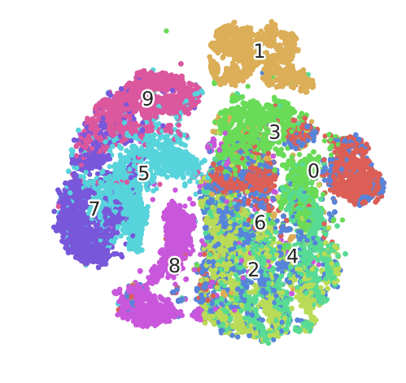

Dimensionality
Jon Reades - j.reades@ucl.ac.uk
1st October 2025
Curse and Blessing…
- More dimensions means more information.
- More dimensions makes for easier seperation.
- More dimensions inflates distance.
- More dimensions increases the risk of overfitting.
Or as Analytics India Magazine puts it:
- High-dimensional spaces have geometrical properties that are counter-intuitive and far from the properties observed in two- or three-dimensional spaces.
- Data analysis tools are often designed with intuitive properties and low-dimensional spaces in mind.
Dimensionality Reduction
PCA
Workhorse dimensionality reduction method: simple, fast, and effective. Can be thought of as freely rotating axes to align with directions of maximum variance. I like this summary:
PCA (Principal Components Analysis) gives us our ‘ideal’ set of features. It creates a set of principal components that are rank ordered by variance (the first component has higher variance than the second, the second has higher variance than the third, and so on), uncorrelated (all components are orthogonal), and low in number (we can throw away the lower ranked components as they usually contain little signal).
But I particularly liked this exposition in Towards Data Science.
In Practice…
from sklearn.decomposition import PCA
pca = PCA(n_components=2)
pca.fit(data)
print(pca.explained_variance_ratio_)
print(pca.singular_values_)
pca.transform(data)See also: Kernel PCA for non-linear problems.
RT(F)M
Why was I banging on about transformations? Well, what does this assume about the data?
Linear dimensionality reduction using Singular Value Decomposition projects data into to a lower dimensional space. The input data is centered but not scaled for each feature before applying the SVD.
Other Considerations
PCA is a form of unsupervised learning that does not take output labels into account. Other approaches (such as Linear Discriminant Analysis [note: not Latent Dirichlet Allocation]) consider the output as part of the transformation. PCA is also deterministic.
See this discussion.
t-SNE
t-Distributed Stochastic Neighbour Embedding is best understood as a visualisation technique, not an analytical one. This is because it is probabilistic and not deterministic.
In Practice…
The choice of perplexity and n_iter matter, and so does the metric. In practice you will need to experiment with these.
UMAP
Non-linear dimensionality reduction that tries to preserve both local and global structure. Puts it between PCA and t-SNE.

In Practice…
The choice of n_neighbors, min_dist, and metric matter. In practice you may need to experiment with these.
Gotcha!
t-SNE (less so UMAP) requires very careful handling:
- Hyperparameters matter a lot
- Cluster size means nothing
- Cluster distances mean nothing
- Clusters may mean nothing (low neighbour count/perplexity)
- Outputs are stochastic (not deterministic)
Both likely require repeated testing and experimentation.
Other Approaches
- Feature selection, including forwards/backwards (
sklearn.feature_selectionhere) - Decomposition (
sklearn.decompositionhere, especiall SVD) - Other types of manifold learning (
sklearn.manifoldhere) - Random projection (
sklearn.random_projectionhere) - Support Vector Machines (
sklearn.svmhere) - Ensemble Methods (such as Random Forests:
sklearn.ensemble.ExtraTreesClassifierandsklearn.ensemble.ExtraTreesRegressorhere and here)
Additional Resources
- Rethinking ‘distance’ in New York City Medium URL
- Five Boroughs for the 21\(^{st}\) Century Medium URL
- Curse of Dimensionality
- The Curse of Dimensionality
- Understanding Curse of Dimensionality
- Curse of Dimensionality – A ‘Curse’ to Machine Learning
- Importance of Feature Scaling
- Understanding PCA
- Introduction to t-SNE in Python